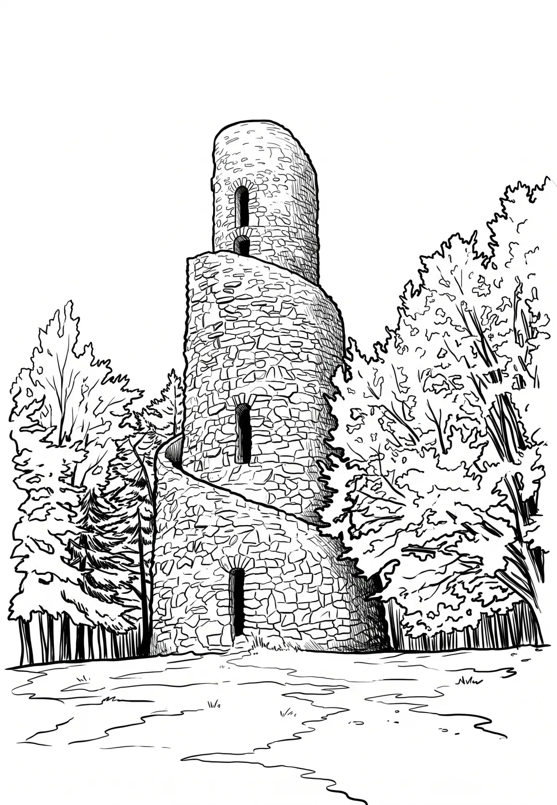

Rozhledna Krásenský vrch
Karlovarský kraj · 777 m n. m.

technická památka · #062
Rozhledna Krásno, též Rozhledna Krásenský vrch, se nachází na zalesněném vrcholu Na vyhlídce, asi 1 km jižně od města Krásno v okrese Sokolov v Karlovarském kraji. Je chráněna jako kulturní památka České republiky.